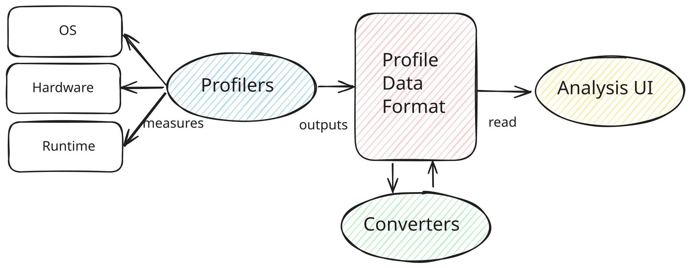

Profiling
This is an attempt to map the software profiling ecosystem, with a focus on the OCaml programming language. A review / survey of profilers, their data formats, analysis UIs and converters between data formats.

Profilers
There are a number of different profilers available for OCaml, each with their strengths and usecases.
| Profiler | Purpose | Profile Data Format | Link |
|---|---|---|---|
| olly | observability tools around the runtime events tracing system introduced in OCaml 5.0 | Chrome Tracing Format (JSON), Fuchsia Trace Format | runtime-events-tool |
| magic-trace | collects and displays high-resolution traces of what a process is doing | Fuchsia Trace Format | magic-trace |
| memtrace | Statistical Memory Profiling for OCaml aka statmemprof | Common Trace Format (CTF) | memtrace |
| eio-trace | eio-trace can be used to record and display traces of programs using the eio library | Fuchsia Trace Format | eio-trace |
| perf | General-purpose profiler that uses hardware performance counters on Linux | Common Trace Format (CTF) | |
| Instruments | General-purpose profiler that comes with Xcode on macOS | ||
| dtrace | General Performance analysis tool for FreeBSD, Solaris and MacOS | dtrace | |
| eBPF | General Performance analysis tool for Linux (similar to DTrace) |
The intent is to have a minimal set of Profile Data Formats produced by OCaml tooling that can be used with existing Analysis UI tools.
Visualisation and Analysis UI
| Name | Description | Profile Data Format | Link |
|---|---|---|---|
| Perfetto | System profiling, app tracing and trace analysis | Fuchsia Trace Format (others) | perfetto.dev |
| Speedscope | An interactive flamegraph visualizer | Various | github.com/jlfwong/speedscope |
| memtrace_viewer | Statistical Memory Profiler | CTF | github.com/janestreet/memtrace_viewer |
| flamegraph | Stack trace visualiser | Folded Stacks | www.brendangregg.com/flamegraphs.html |
| flamescope | Visualization tool for exploring different time ranges as Flame Graphs | Linux perf script | github.com/Netflix/flamescope |
| pprof | Visualise profiling data as directed graph or flamegraphs | Protocol Buffers | github.com/google/pprof |
Profile Data Format
Chrome Tracing Format is a textual JSON also know as Trace Event Format or Chrome Performance Profile. spec No OCaml libraries for reading / writing
Fuchsia Trace Format is a binary format used to collect, store, and transmit trace records. Focuses on performance. spec Two libraries for reading / writing trace-fuchsia and tracing.
Common Trace Format is a binary trace format designed to be very fast to write. Uses a declaritive language called the Trace Stream Description Language TSDL to describe trace stream layout. spec No OCaml libraries for reading / writing.
Pprof is a common stacktrace profile format using protocol buffers. Used by pprof supported as an input format by Speedscope and commercial monitoring tools (Google Cloud Profiler, Polar Signals, Datadog).
Converters
Nothing to see here!
Walk throughs
- OCaml 5 Performance part 1/part 2 comprehensive investigation of OCaml 5 performance for an application.
- Generating CPU Flamegraphs for OCaml on Linux here
- Generating CPU Flamegraphs for OCaml on MacOS here
- Memory profiling with statmemprof in 4.14 LTS and 5.3
Resources
This format was inspired by https://profilerpedia.markhansen.co.nz
Prior art:
-
OCaml-bench profiling notes https://github.com/ocaml-bench/notes/blob/master/profiling_notes.md
-
Add Profile-Guided Optimization (PGO) support to the compiler - https://github.com/ocaml/ocaml/issues/12200 [runtime-events-tools]: https://github.com/tarides/runtime_events_tools [magic-trace]: https://github.com/janestreet/magic-trace [memtrace]: https://github.com/janestreet/memtrace [dtrace]: https://dtrace.org/ [eio]: https://github.com/ocaml-multicore/eio [eio-trace]: https://github.com/ocaml-multicore/eio-trace [perfetto.dev]: https://ui.perfetto.dev/ [github.com/jlfwong/speedscope]: https://github.com/jlfwong/speedscope [github.com/janestreet/memtrace_viewer]: https://github.com/janestreet/memtrace_viewer [www.brendangregg.com/flamegraphs.html]: https://www.brendangregg.com/flamegraphs.html [github.com/Netflix/flamescope]: https://github.com/Netflix/flamescope [github.com/google/pprof]: https://github.com/google/pprof/blob/main/doc/README.md